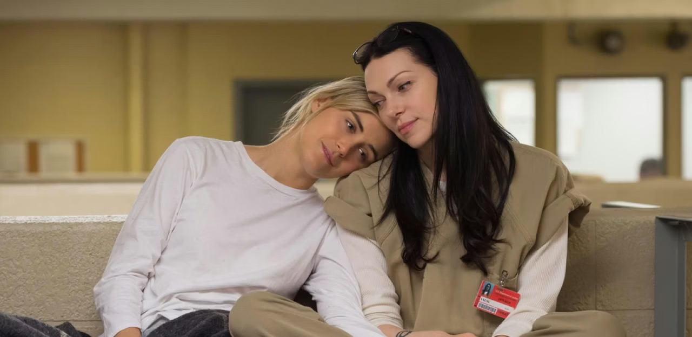

Emmys data shows streaming series have gradually dominated spots for the two biggest awards of the night
Digital News-it
By Natasha Ero
At the 77th Primetime Emmy Awards on Sunday, The Pitt, a one-shift story following ER workers, became the first series from HBO Max to be nominated and win best drama series. The Studio, a Seth Rogen-led comedy series exploring art and business in Hollywood, brought back the best comedy series prize to Apple TV+ for the third time.
These wins reflect a trend of streaming series gaining significant recognition in recent years over traditional TV series. When the Netflix series House of Cards was first nominated for best drama series in 2013– the first time a streaming-only series was nominated in a major category– it marked the beginning of a new era for streaming series at the Emmys.
Capital News Service analyzed the data of all 228 Emmy Awards nominations for best drama series and best comedy series between 2010 and 2025 to shed light on how streaming series have gradually displaced traditional TV series in both the biggest awards of the Emmys. The number of streaming-only series nominated for best drama series first surpassed series produced by TV networks in 2017.
This year, six streaming shows– Disney’s Andor, Netflix’s The Diplomat, Hulu’s Paradise, HBO Max’s The Pitt and Apple TV+’s Severance and Slow Horses –were nominated for best drama series, compared to only two TV series–The Last of Us and The White Lotus, both from HBO.
Digital News.it
Heute
In 2014, Netflix’s Orange Is the New Black became the first streaming-only show nominated for best comedy series. The number rose in subsequent years, reaching its peak in 2021, when seven streaming series, including Ted Lasso, Emily in Paris and Hacks, almost entirely dominated the nomination list.
For both best drama and comedy series, the proportion of streaming series has increased slowly in the 2010s and exceeded half of the nomination pool for most years in the 2020s.
The growth in nominations of streaming series peaked in 2021, after the outbreak of COVID-19.
The growth in nominations of streaming series peaked in 2021, after the outbreak of COVID-19. HBO Max was launched the same year, and Apple TV+ and Disney+ debuted the year before.
While nominations have increased for streaming shows, the Emmy Awards winners have not followed. From 2010 to 2025, TV series have won 23 awards, or about 16% compared to all nominations from both best drama and comedy series, while streaming series have won only nine awards, or about 11%. The winner list includes The Handmaid’s Tale, The Crown, Ted Lasso and Hacks.
Despite gains, streaming series are still not winning as many Emmys as traditional series
While award wins are still lagging, streaming series nominations have been consistently rising for the past 16 years. Streaming series have won for outstanding comedy in six of the last eight Emmys. This could be a sign for binge-watchers to expect streaming series to continue to outpace traditional series in the future.